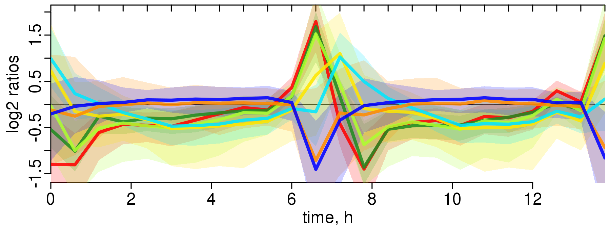
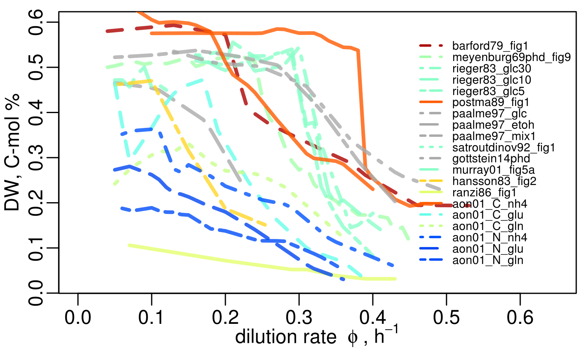
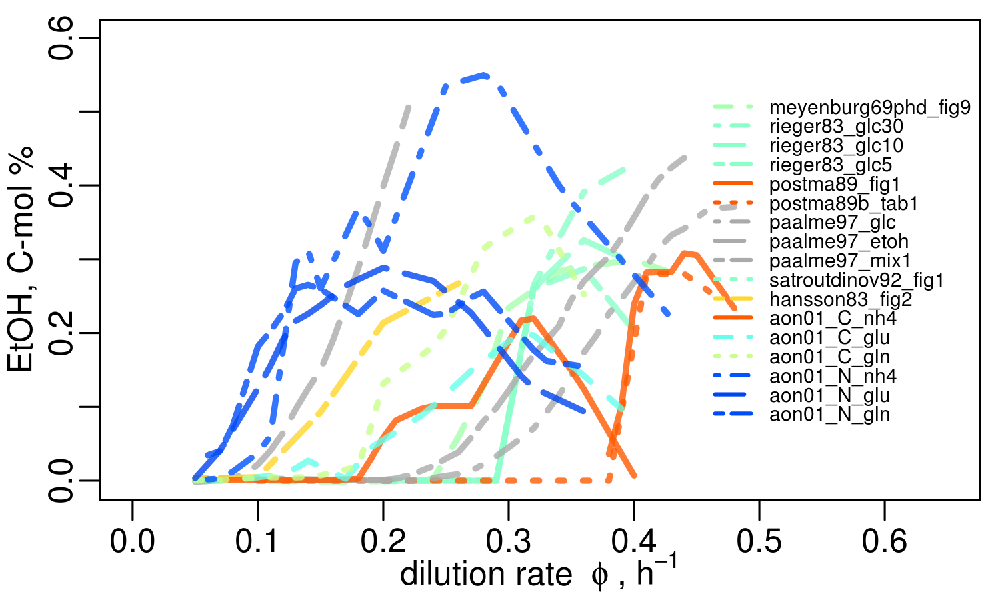
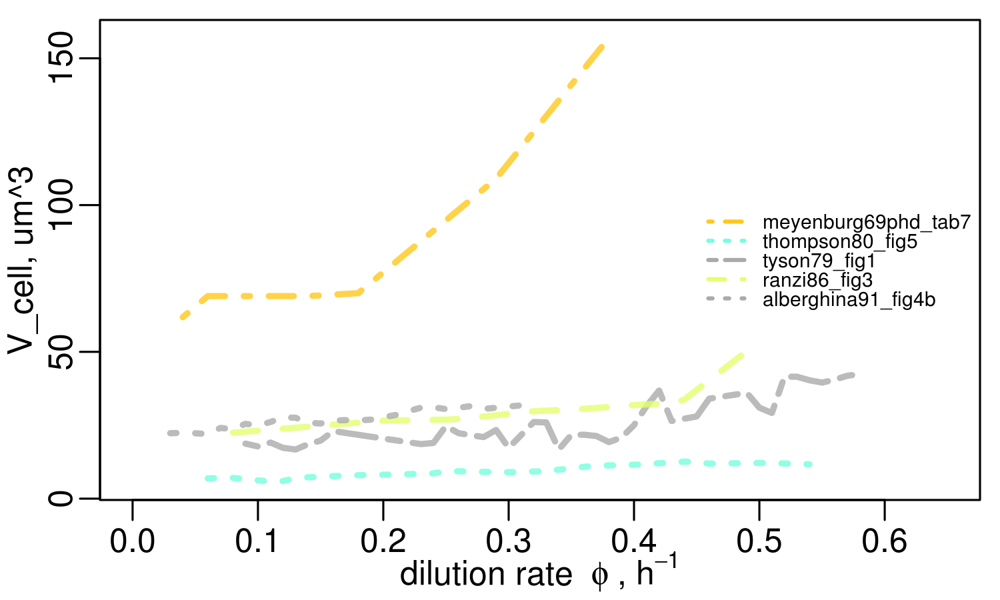

| ultradian | circadian |
|---|---|
| Saccharomyces cerevisiae | Synechocystis PCC6803 |
 |
 |
 |
\[ \begin{equation*} \begin{aligned} \frac{\text{d}X}{\text{d}t} &= + \mu X - \phi X \\ \frac{\text{d}S}{\text{d}t} &= - \frac{\mu}{y} X + \phi (S_{in} - S)\\\hline \mu =& \mu_{max} \frac{S^n}{S^n+K_S^n};\; y = a + b \cdot S \end{aligned} \end{equation*} \] |
Gene Expression & Growth in Budding Yeast
X-Men Group Retreat, Bergen aan Zee, Nov 2016
Rainer Machne
Respiratory Oscillations in Budding Yeast
Varying Periods
oscillation: period distinct from cell cycle, but synchronization and semi-linear relations; continuous culture!
Varying Periods ... Constant Gene Expression Profile
| Saccharomyces cerevisiae | growth rate | ||
|---|---|---|---|
 |
CEN.PK 122 \[0.13\; \text{h}^{-1}\] |
 |
CEN.PK 122 \[0.1\;\text{h}^{-1}\] |
|
IFO 0233 \[0.09\;\text{h}^{-1}\] |
 | CEN.PK 122 \[0.05\;\text{h}^{-1}\] |
 |
DBY12007 \[\sim \textbf{0}\;\text{h}^{-1}\] |
Oscillation also without cell division! |
$$\rightarrow \text{live at the brink}$$
Gene Expression & Growth Laws

Machne & Murray, PLoS ONE 2012
Slavov et al., Mol Biol Cell 2011
Gene Expression & Growth Laws

Machne & Murray, PLoS ONE 2012
Slavov et al., Mol Biol Cell 2011
Gene Expression & Growth Laws

Machne & Murray, PLoS ONE 2012
Slavov et al., Mol Biol Cell 2011
$$t_2=\frac{\ln(2)}{\mu}$$
Growth Laws: Linear Relations to μ
| major carbon flux | nucleic acid content |
|---|---|
 |
 |
 |
 |
koch1988, μ = rib2 heijnen92: limiting is membrane space recent trade-off models: protein costs
A Working Hypothesis
| culture level | cellular level |
|---|---|
 |
 |
\[ \begin{equation*} \label{eqn:ancat} \begin{aligned} \frac{\text{d}X}{\text{d}t} &= (\mu_{ab} - \phi) X \\ \frac{\text{d}S}{\text{d}t} &= \phi (S_{in} - S)-(\mu_{ab} + \mu_{cd}) X\\ \frac{\text{d}atp}{\text{d}t} &= (n_{cd} \mu_{cd} - n_{ab} \mu_{ab} - \mu_{m})\frac{C_c}{V_c} - \mu_{ab} atp\\ adp & = a_{tot} - atp\\\hline \end{aligned} \end{equation*} \]
-> model yeast/coilseq - sequence-dependence of DNA state!
Growth & Gene Expression in E. coli & Cyanobacteria


... © fritz, the platypus
platexpress
Growth & Stress
red/blue genes in batch growth:
yeast diauxie: expo phase is not "balanced", slow transition, atp-model?
blue genes!? phase of low energy, stress, differentiation
Stress & Cell Structure
cells are well prepared for stress: differentiation
stress: P-bodies form, cell becomes granular, phase-transition
show osci water structure paper
Stress & Chromatin
amariei: three phases of nucleosome condensation
Working Hypothesis: Chromatin Remodeling
-> model chromatin remodeling, but ATP/ADP general, electron transport chain
Stress & Pervasive Transcription in Yeast
RNAseq data!
noncoding, antisense expression: only during low energy phase
upstream noncoding: detected by Karl, segmenTier, potentially new mechanism after yeast WGD
THE END
concepts and tools for cyano/bacteria, coilseq